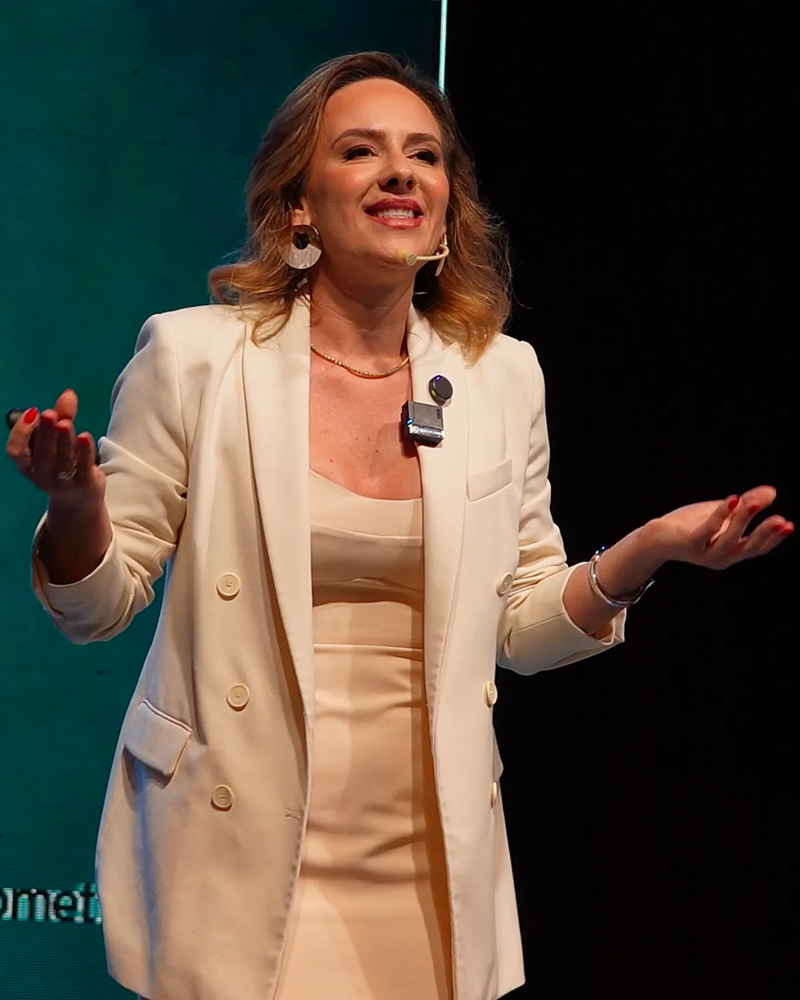

Descubra o que faz o seu dinheiro sair sem você perceber
O DNA Financeiro cruza como você executa e por que você decide, e devolve um entre nove perfis — com a sua sangria invisível e o primeiro movimento a fazer. Resultado na tela, na hora.

Mente Médica
Milionária
Acompanhamento para médicos com consultório que querem transformar faturamento em patrimônio protegido. Finanças, gestão e marca na mesma mesa.
Aplicar para a mentoria Análise individual · não é ordem de chegadaPrefere
conversar antes?
Dúvida sobre a mentoria, sobre o diagnóstico ou sobre a estrutura da sua clínica. Fale com a equipe e alguém te responde.
Chamar no WhatsApp